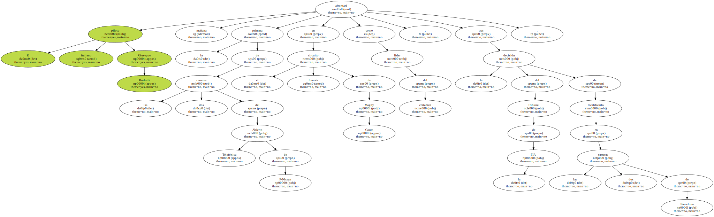
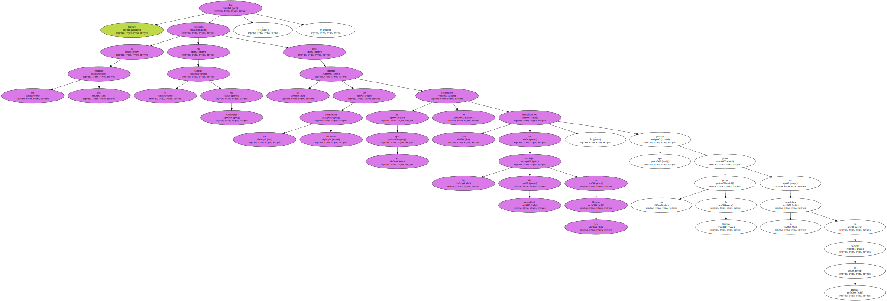
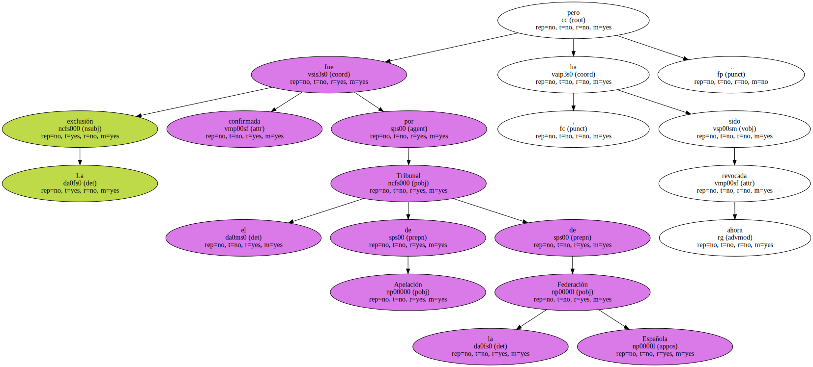
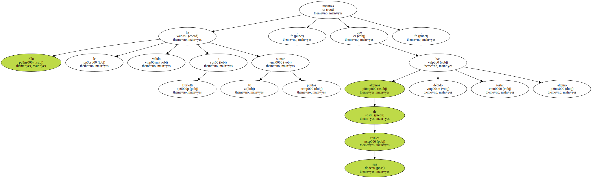
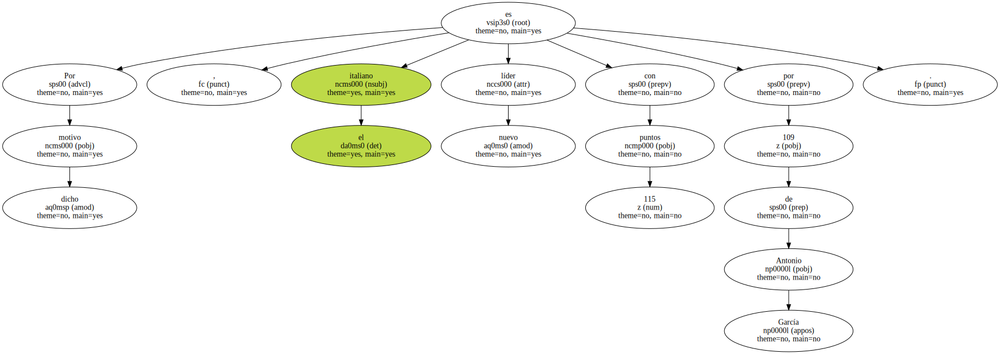
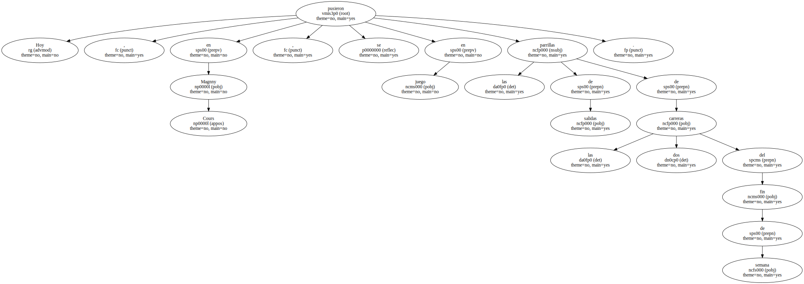
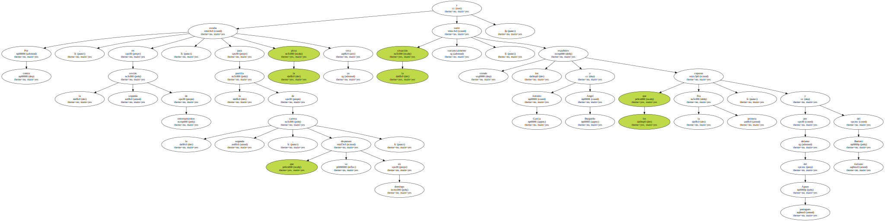

El piloto italiano Giuseppe Burlotti afrontará mañana la primera de las dos carreras del Abierto Telefónica de F-Nissan en el circuito francés de Magny Cours como líder del certamen , tras la decisión del Tribunal de la FIA de recalificarlo en las dos carreras de Barcelona.
Burlotti fue excluido de las dos mangas en el Circuit de Catalunya , tras un informe de los comisarios técnicos en el que se constataba una modificación de los anclajes de seguridad de las llantas , que permite ganar un poco de tiempo en la maniobra de cambio de ruedas.
La exclusión fue confirmada por el Tribunal de Apelación de la Federación Española , pero ahora ha sido revocada.
Ello le ha valido a Burlotti sumar 40 puntos , mientras que algunos de sus rivales han debido restar alguno.
Por dicho motivo , el italiano es nuevo líder con 115 puntos por 109 de Antonio García.
Hoy , en Magnny Cours , se pusieron en juego las parrillas de salidas de las dos carreras del fin de semana.
El estado de la pista , muy mojada , favoreció a los pilotos en los entrenamientos para la primera carrera.

Por contra , en la segunda sesión de entrenamientos , para la parrilla de la segunda carrera , que se disputará en domingo , la pista estaba ya seca y la situación varió sustancialmente , siendo los españoles Antonio García y Angel Burgueño los que coparon la primera fila , por delante del portugués Aguas y del italiano Burlotti.
